Maguro ヘルプ
バージョン 0.2.6 · Windows · このサイトはライトテーマで表示されます
概要
Maguro は、Windows 向けのマルチペイン ファイル マネージャーです。各ペインの中身はエクスプローラーのビューそのものなので、右クリックメニュー、ドラッグ アンド ドロップ、サムネイル、Windows のコピー ダイアログをエクスプローラーと同じように使えます。
インストール直後は、ペインがひとつの状態で起動します。ほかのツールを使わずにコピー、移動、比較をしたいときは、ペインを追加してください。4×4 の格子で、最大 16 ペインまで並べられます。
Maguro は、efww 氏による efww/grids のフォークです。実行ファイル名（maguro.exe）、ウィンドウ クラス、設定フォルダー、ホットキー（Win+Shift+E）は Maguro 独自のものを使います。
スタート メニューかコマンド ラインから起動します。maguro.exe C:\Work D:\Archive のようにフォルダーを指定すると、そのフォルダーが開きます。.maguro ファイルを指定すると、保存したセッションが開きます。.grids、.qdr、grids.ini はセッション ファイルではないため、インポートされません。
F1 を押すと、このヘルプがブラウザーで開きます。Ctrl+/ でアプリ内の簡易ショートカット一覧、Ctrl+, で設定が開きます。
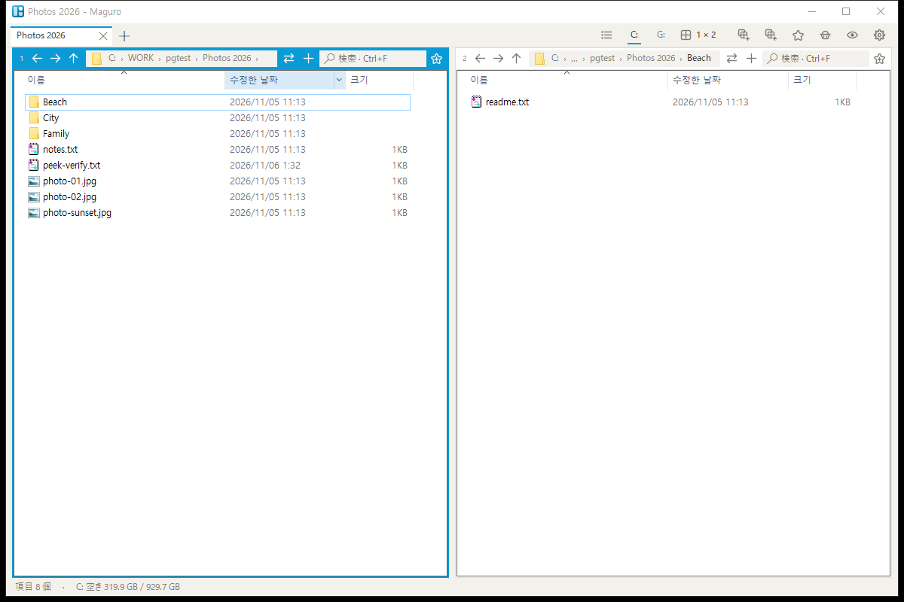
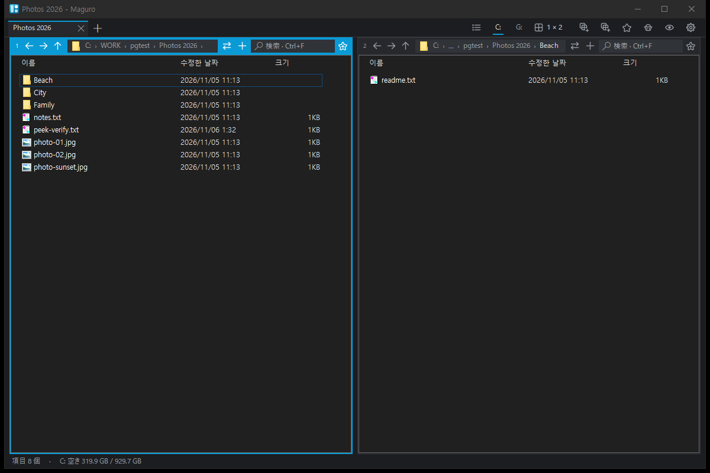
アドレス バーとツールバー
キー操作は ショートカット にまとめています。
アドレス バーには、現在のフォルダーが表示されます。パスの各部分をクリックするとそのフォルダーへ移動し、「›」をクリックするとその中のフォルダーが一覧表示されます。パスを直接入力するには、現在のフォルダー名かバーの空いている部分をクリックするか、アドレス バーのショートカット（Ctrl+L、Alt+D、F4）を押します。
タブ列のツールバーには、レイアウト、保存、セッションを開く、お気に入り、ファイルバスケット、フォルダー監視がこの順で並びます。ファイルバスケットとフォルダー監視は、お気に入りの星と歯車の間にあります。ドライブ文字はタブ列に置くこともでき、ウィンドウの幅が狭いときは後ろの文字から順に隠れます。ツールバー、ドライブ ボタン、ステータス バーは、設定 → 外観で非表示にできます。ツールバーを隠すと、レイアウト、保存、セッションを開く、お気に入り、ファイルバスケット、フォルダー監視、ドライブ文字も一緒に隠れます。歯車とタブ一覧ボタンは残ります。
歯車の名前は「設定と表示」です。そのメニューを開き、ツールバーを非表示にしても歯車は残ります。メニューは区切り線でグループに分かれています。最初は「このタブを保存」「セッションを開く」「ワークスペース」、次に「ファイルバスケット」「最近使ったファイル」「エクスプローラーのウィンドウからフォルダーを開く」「フォルダー監視」で、該当する場合は WinMerge もここに入ります。続いて表示（隠しファイルを表示、ファイルの拡張子を表示、左のパネル、お気に入りパネルを表示、ツリービューパネルを表示、プレビュー ウィンドウ）、外観（ライト テーマまたはダーク テーマ、Windows のライト / ダークに合わせる、選択色、言語）、動作（空白をダブルクリック: 上のフォルダー、どこからでも Maguro を前面に）があり、最後に「設定」「ショートカット キー」「ヘルプ」「Maguro のバージョン情報」が並びます。「フォルダーに表示」はこのメニューにはありません。最近使ったファイルの右クリックメニューか、Ctrl+Enter を使ってください。
ステータス バーには、選択中の項目数とドライブの空き容量が表示されます。
⇄ ボタンを押すと、選択したフォルダー（選択がなければ現在のフォルダー）が別のペインで開きます。このとき、このペインの列、並べ替え、表示の設定も引き継がれます。ファイルを選択している場合は、そのファイルを別のペインへコピーまたは移動します（一度に 10,000 個まで）。ペインがひとつしかない場合は、左右に分割します。何も選択していないとき、またはフォルダーを含まずファイルだけを選択しているときは、現在のフォルダーを複製し、選択したファイルはコピーしません。
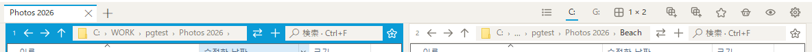
レイアウトとペイン
キー操作は ショートカット にまとめています。
1 つのペインには、フォルダーが 1 つ開きます。レイアウト ボタンをクリックすると、ペインが均等な格子に分かれます。レイアウトの選択画面で押したままドラッグすると、列ごとの行数を指定できます。方向キーと Enter でも選べます。
区切り線をドラッグするとサイズが変わり、ダブルクリックすると均等に分割されます。上限は、列が 4、1 列あたりの行が 4、ペインの合計が 16 です。ドロップ位置のプレビューが赤くなった場合は、そのレイアウトが上限を超えています。
Ctrl+Shift+M を押すか、ペインヘッダーをダブルクリックすると、そのペインが最大化されます。もう一度同じ操作をすると、元に戻ります。
設定 → 一般 → 既定のレイアウトは、新しいタブ、新しいウィンドウ、初回起動時に使われるレイアウトです。インストール直後はペインひとつです。レイアウトを一度も保存していない古い maguro.json の場合は、これまでどおり左右 2 つのペインで開きます。別の起動から渡されたパスも、これまでどおりペインひとつのタブで開きます。保存した .maguro ファイルは、そのファイルに保存されているレイアウトで開きます。
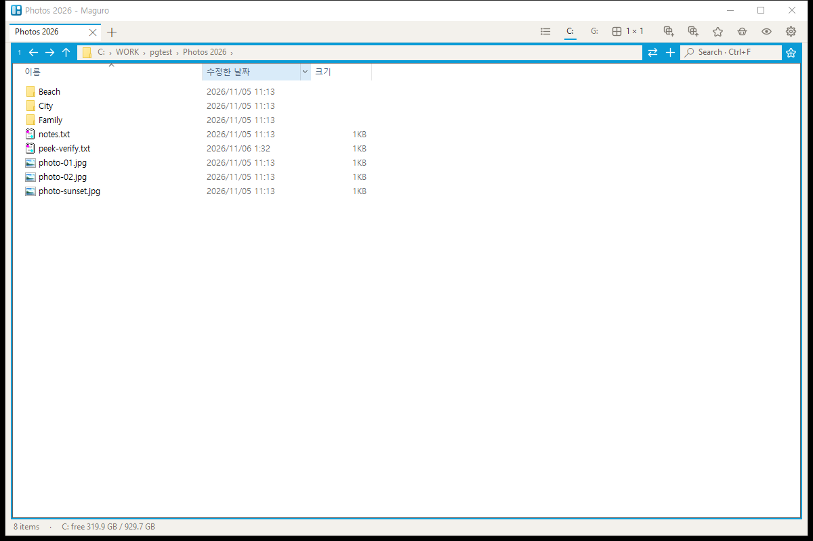
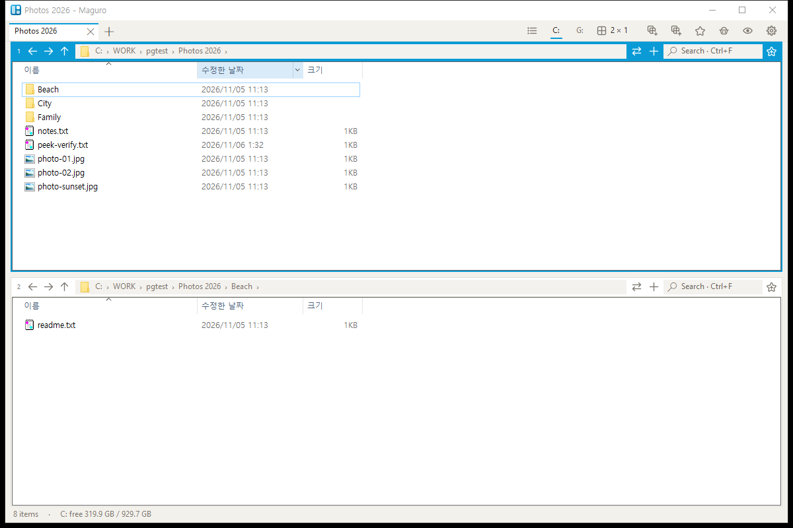
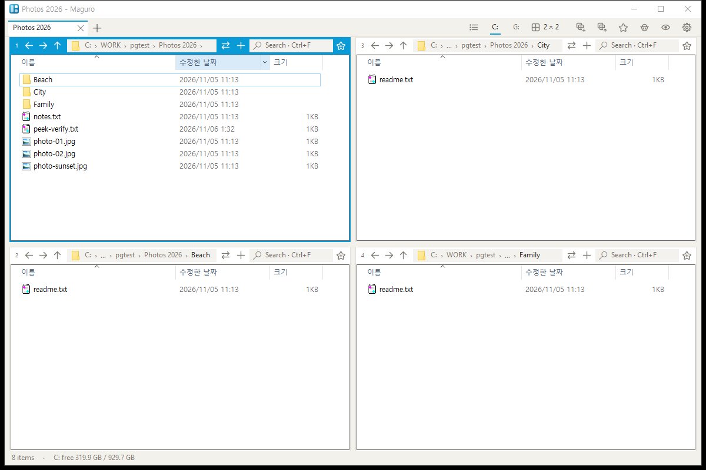
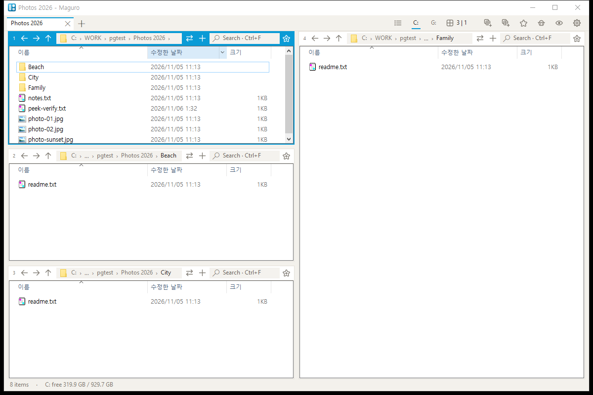
ペインの移動と複製
番号のバッジかヘッダーをドラッグすると、ペインを移動できます。
別のペインの端にドロップするとそのペインが分割され、中央にドロップすると 2 つのペインの位置が入れ替わります。Ctrl を押しながらドラッグすると、現在のペイン タブをコピーします。この場合、端にドロップすると元のペインを残したまま分割し、中央にドロップするとそのマスにペイン タブとして追加します。ドラッグ中に Ctrl を離すと、コピーではなく移動になります。
同じ操作はキーボードでも行えます。Alt+Shift+方向キーで隣のペインへフォーカスを移し、Ctrl+Alt+Shift+方向キーで隣のペインと位置を入れ替えます。
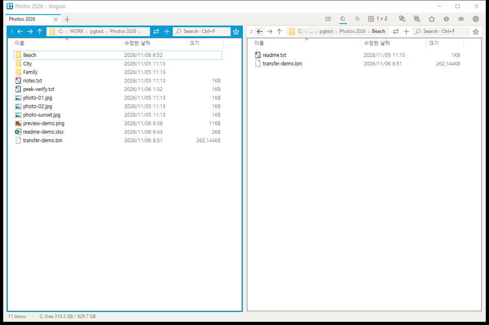
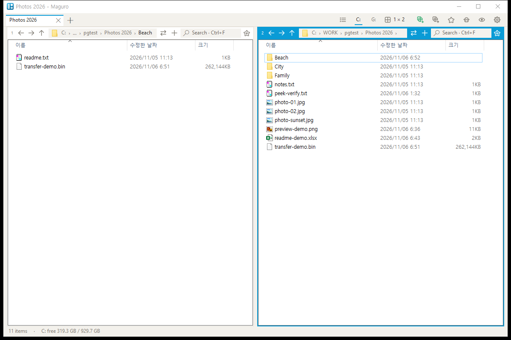
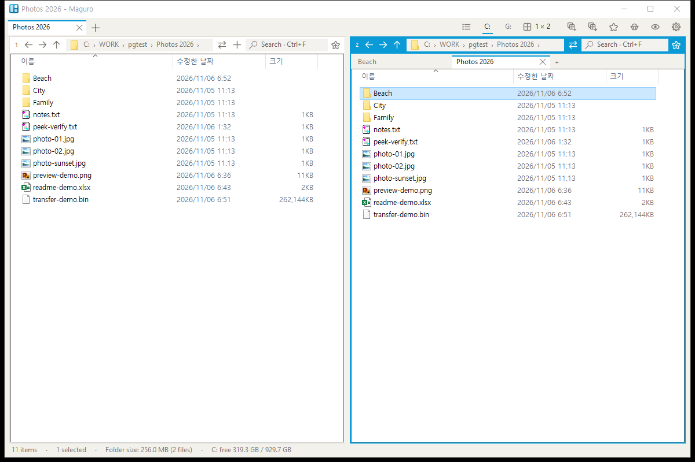
ウィンドウ タブとセッション
キー操作は ショートカット にまとめています。
ウィンドウ タブには、ペイン、フォルダー、表示、列、フィルター、ロック、色ラベルを含むレイアウト全体が保存されます。タブ名は、名前を変更するまでアクティブなフォルダー名に合わせて変わります。タブを右クリックすると、名前の変更、ロック、複製、新しいウィンドウへ移動、保存、色の設定、タブ一覧を開く、の操作ができます。ロックしたタブは、「ほかのタブを閉じる」や「すべてのタブを閉じる」を実行しても閉じません。
Ctrl+T で新しいタブを開き、Ctrl+W で現在のタブを閉じます。Ctrl+Shift+T で閉じたタブを開き直し、Ctrl+Alt+K でタブを複製します。タブの切り替えには Ctrl+Tab と Ctrl+Shift+Tab を使います。
保存（Ctrl+S）を押すと、このタブが保存されます。一度も保存していないタブでは、名前の入力を求められます。保存ボタンに緑の点が付いているときは、このタブのレイアウトに未保存の変更があります。通常のファイル コピーでは、緑の点は付きません。設定 → セッションでは、緑の点を非表示にしたり、終了時にセッションを自動保存したりできます。終了時の自動保存を確実に行うには、ウィンドウの閉じるボタンで閉じてください。
「セッションを開く」を使うと、保存したタブが現在のタブの隣に開きます。複数のセッション ファイルを開いた場合は、ファイルごとに別のタブが開きます。
名前付きセッションは .maguro ファイルとしてのみ保存され、設定ファイルと同じ場所にある maguro-sessions フォルダーに置かれます（%APPDATA%\Maguro\maguro-sessions、ポータブル モードでは exe と同じ場所）。セッション ファイルには、レイアウト、ペインのパス、表示、列、色合い、ペイン タブ、ウィンドウ タブが保存されます。お気に入り、ファイルバスケット、右クリックメニューの設定はセッションには含まれず、maguro.json に保存されます。
Maguro は .grids、.qdr、grids.ini をインポートしません。コマンド ラインで old.qdr を渡しても、セッションは開きません。設定 → 詳細では、Maguro の maguro.json や、Maguro が以前使っていた ini テキストをインポートできます。この ini は Maguro 自身のファイルで、grids のファイルではありません。
「単一ウィンドウ」がオフのときは、Ctrl+N で別のウィンドウが開きます。インストール直後は、この設定はオンになっています。オンのときは、Maguro をもう一度起動したとき、Ctrl+N を押したとき、タブをタブ列の外へドラッグしたとき、「新しいウィンドウへ移動」を選んだときに、新しいウィンドウではなく今のウィンドウにタブが開きます。「二重起動を防ぐ」も既定でオンなので、2 回目以降の起動は今のプロセスの中で処理されます。
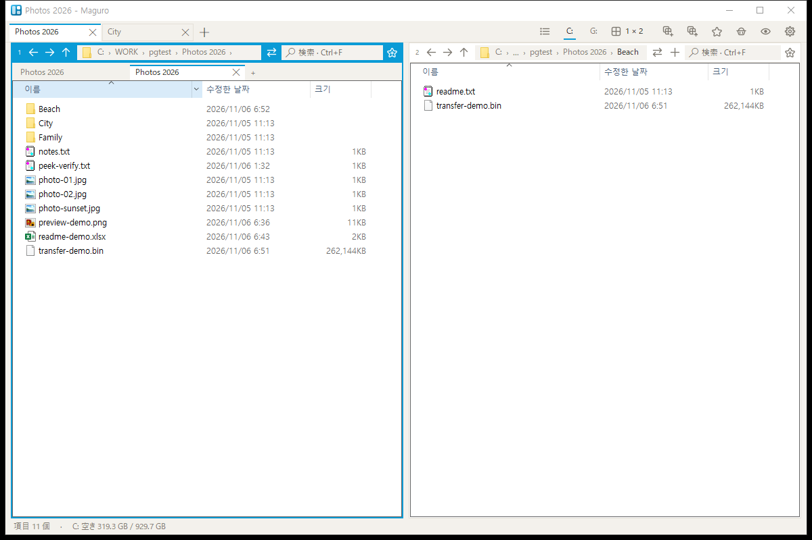
タブ一覧
Ctrl+Shift+L を押すと、このウィンドウのタブ一覧が開きます。すでに開いている場合は閉じます。タブ列の右端にある一覧ボタンも同じ動作です。タブの右クリックメニューの タブ一覧… は、一覧を開くか、すでに開いていれば一覧にフォーカスを移します。一覧は Esc か「閉じる」で閉じます。
1 行が 1 つのウィンドウ タブです。列には、タブ名、レイアウト（例: 2×2、列ごとに行数が異なる場合は 2 | 3）、ペイン数、フォルダーのチップが表示されます。現在のタブにはセルリアンのバーが付き、ロックしたタブにはロックの印が表示されます。各タブは、最初は要約の 1 行です。アクティブなペインの現在のフォルダーと、残りのフォルダーを示す +N だけが表示されます。Right でその行を展開し、Left で折りたたみます。現在のタブは最初から開いています。フィルターは一致するタブだけを展開します。
フィルターは大文字と小文字を区別せず、タブ名、フォルダーの表示名、フルパスを対象に絞り込みます。入力欄の案内文は「タブ名またはフォルダーで絞り込み」です。フォルダー チップにマウス ポインターを合わせると、チップの下のツールチップにフルパスが表示されます。PC は、シェルの識別子ではなく表示言語に合わせた名前で表示されます。
F2 を押すと、選択したタブの名前をその場で変更できます。Enter で確定し、Esc で取り消します。テキストを変更せずに確定した場合、自動で付いたフォルダー名は固定されません。名前を空にするか数字だけにすると、手動で付けた名前が消え、タブ名は再びフォルダーに合わせて変わるようになります。手動で付けた名前は 80 文字まで保存されます。
Enter、移動ボタン、ダブルクリックのいずれかでそのタブに切り替わり、一覧が閉じます。フィルター欄にフォーカスがあり、文字が入力されているときは、Del でフィルターを消去します。それ以外のときは、選択したタブを閉じられる場合に限り、Del でそのタブを閉じます。
下部には、タブ数と、Enter で移動、Right で展開、Left で折りたたみ、F2 で名前の変更、Del でタブを閉じる、Esc でウィンドウを閉じる、という操作の案内が表示されます。
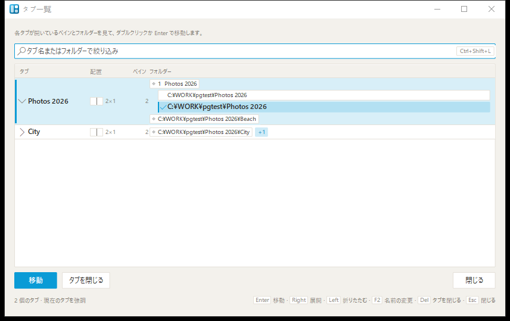
ペイン タブ
キー操作は ショートカット にまとめています。
ペイン タブは、1 つのペインの中で追加のフォルダーを開くための機能で、ウィンドウ タブとは別のものです。フォルダーが 1 つだけのときは、ペイン タブの列は表示されません。ペイン タブは、⇄ の隣のボタンで追加します。
ペイン タブを閉じるには、中クリックするか、小さな閉じる印をクリックします。Ctrl+Alt+T でペイン タブを作成、Ctrl+Alt+W で閉じ、Ctrl+Alt+Page Down と Ctrl+Alt+Page Up でペイン タブを切り替えます。この 4 つはフォーカスがペインにあるときだけ動作するため、ウィンドウ タブのショートカットとは競合しません。
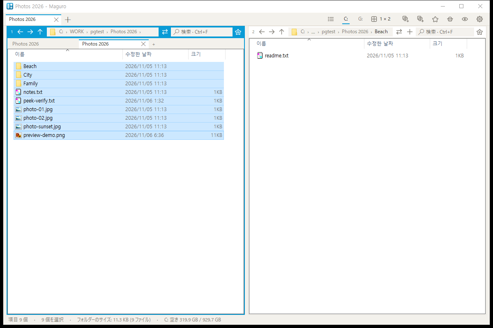
ペインの色
ペインヘッダーを右クリックすると、色ラベルを設定できます。ラベルはセッションと一緒に保存され、ウィンドウ タブの色とは別に管理されます。
色は空、グレー、ラベンダー、セージ、ピーチ、ローズの 6 種類で、ライト テーマとダーク テーマでそれぞれ異なる色合いになります。これはペインのラベルで、ウィンドウのアクセント カラーとは別物です。アクセント カラーは設定 → 外観で設定でき、既定はセルリアン #0A9BD6 です。
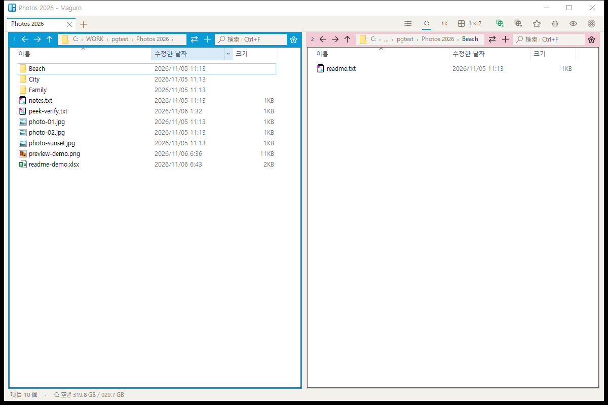
お気に入りとフォルダー ツリー
キー操作は ショートカット にまとめています。
左のパネルには、お気に入りとフォルダー ツリーが上下に並んでいます。間の区切り線をドラッグすると、大きさの配分を変えられます。どちらを上にするかは設定 → ペインと表示で選べます（既定はお気に入りが上）。Ctrl+Shift+E で、左のパネル全体の表示と非表示を切り替えます。「お気に入りパネルを表示」と「ツリービューパネルを表示」（表示メニュー、または設定 → ペインと表示）で、それぞれを個別に表示できます。片方だけならパネル全体の高さを使い、両方オフにすると左のパネルが隠れます。
お気に入りにはフォルダーとファイルを登録でき、グループの中にグループを作ることもできます。エクスプローラーのクイック アクセスにピン留めした項目や、エクスプローラーのお気に入りファイルが表示されることもあります。お気に入りをクリックするとアクティブなペインで開き、グループをクリックすると展開または折りたたみます。検索中も親グループは表示されたままなので、見つかった項目の場所が分かります。ファイルやフォルダーをパネルにドロップするとピン留めでき、ドラッグで順番を入れ替えられます。
存在しないフォルダーをクリックした場合、空のパスを開く代わりに、お気に入りから削除するか場所を変更するかを確認するメッセージが表示されます。
Ctrl+B を押すと、お気に入りの簡易一覧が開きます。ここでは、検索、名前の変更、削除、アクティブなペインで開く、の操作ができます。ペインの星ボタンで、そのペインのフォルダーをお気に入りに追加または削除できます。
右クリックメニューには、Maguro 独自の Maguro のお気に入りに追加 または Maguro のお気に入りから削除 という項目があります。これはエクスプローラーのお気に入りコマンドではなく Maguro が追加した項目で、右クリックメニュー項目の設定ページでも非表示にはできません。
フォルダー ツリーで Enter を押すかダブルクリックすると、そのフォルダーがペインに開きます。Ctrl+クリックまたは中クリックすると、ペイン タブとして開きます。
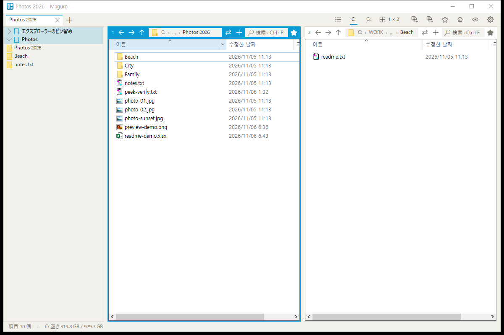
検索
Ctrl+F を押して文字を入力すると、入力に合わせてこのフォルダーの項目が絞り込まれます。
「サブフォルダー」にチェックを入れると、サブフォルダーまで検索します。検索に Everything を使う がオン（既定）で、voidtools Everything が実行中であれば Everything で検索し、そうでなければディスクを直接たどります。結果は最大 300 件まで表示され、並べ替えの設定は maguro.json に保存されます。
設定 → 一般では、Everything がインストールされて実行中かどうかを確認でき、Everything の起動や winget でのインストールも行えます。Everything がインストールされていない状態で初めてサブフォルダー検索をすると、インストールするかどうかを一度だけ確認します。
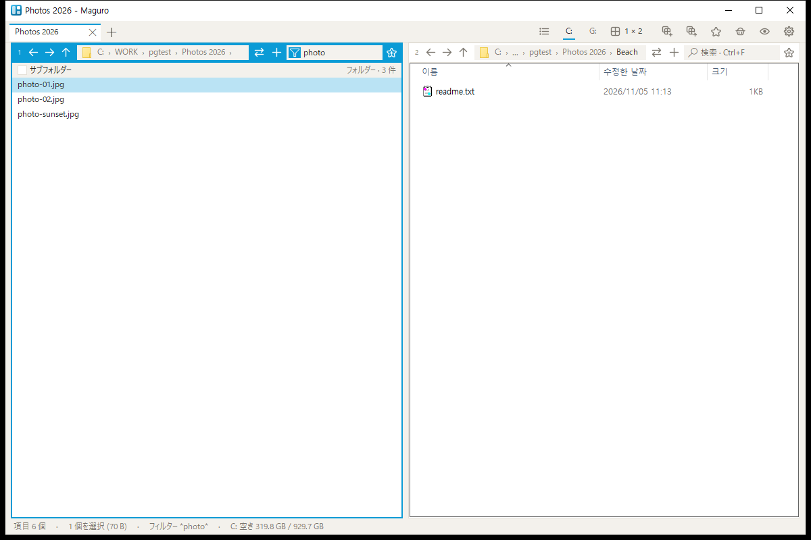
プレビューとクイックルック
キー操作は ショートカット にまとめています。
F3 を押すと、クイックルックが開きます。「スペースでプレビュー」がオン（既定）なら、Space キーでも開きます。ただし、名前を入力してから 1 秒以内に押した Space や、韓国語・日本語の IME で変換中に押した Space は、名前の入力として扱われます。Ctrl+Space と Shift+Space は横取りしません。
クイックルックで表示できるのは、画像（一般的なカメラの RAW を含む）、動画のサムネイル、音声ファイルの情報カード、PDF のページ、Markdown、プレーン テキスト、コード、CSV・TSV の表、ZIP の内容一覧、HWP、HWPX、HWPT です。Office、HTML、Outlook のメール、フォント、PDF は、ファイルが 10 MB 以下であれば、エクスプローラーと同じ仕組みの Windows プレビュー ハンドラーでも表示できます。これより大きいファイルは、待たずに情報カードを表示します。描画できないファイルも、アイコンだけで済ませず、基本情報をまとめたカードで表示します。
クイックルックで Enter を押すと、既定のアプリでファイルを開いてプレビューを閉じます。Shift+Enter か右クリックで「別のアプリで開く」を使えます。Esc、Space、F3 のいずれかでプレビュー ウィンドウを閉じます。F2 で表示中のファイルの名前を変更し、Del でそのファイルを削除します。Ctrl+ホイールで 10% から 800% まで拡大・縮小し、ドラッグで表示位置を動かせます。長いページはホイールでスクロールします。左右の方向キーでは、常に前後のファイルへ移ります。上下の方向キーではスクロールし、ページの端で改めて押すと別のファイルへ移ります。ホイールで次のファイルへ移るのは、設定 → ペインと表示 → ホイールで次/前のファイルへ がオンのときだけで、このオプションは既定でオフです。
Alt+P で、右側のプレビュー ウィンドウの表示と非表示を切り替えます。プレビュー ウィンドウには、アクティブなペインでフォーカスしているファイルが表示されます。Windows のプレビュー ハンドラーがあればそれを使って描画し、なければサムネイルか短い案内を表示します。名前付きの .maguro ファイルを開いても、プレビュー ウィンドウの表示状態は変わりません。区切り線をダブルクリックすると、既定の幅に戻ります。
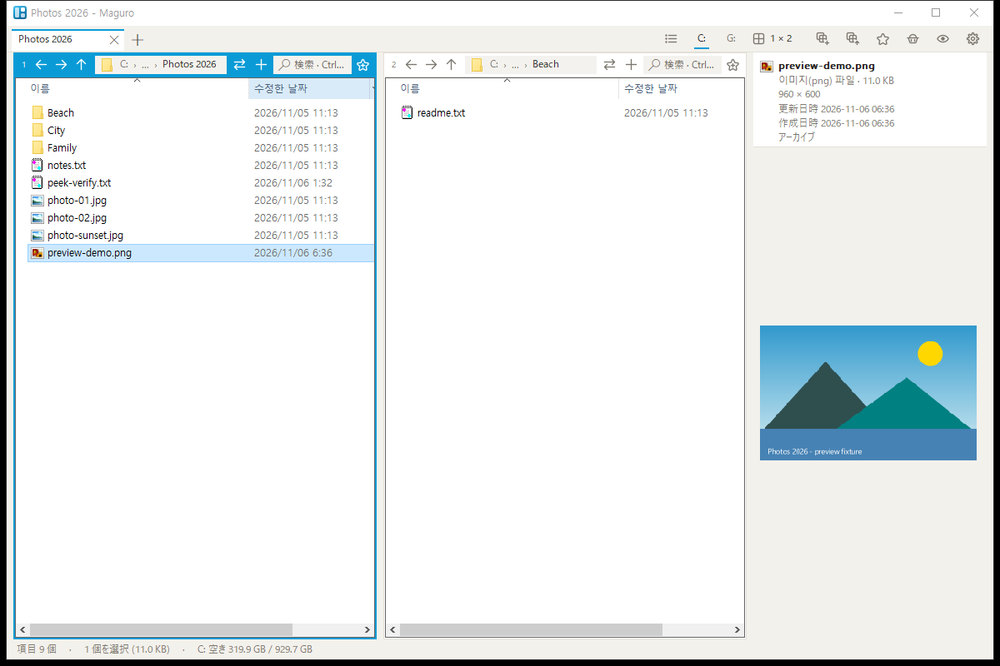
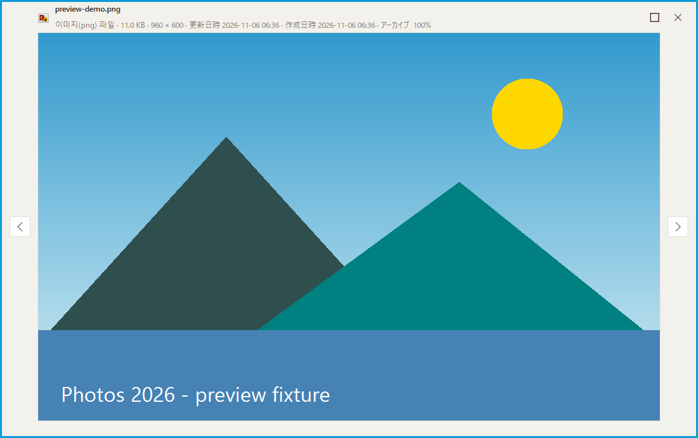
ファイル操作
キー操作は ショートカット にまとめています。
コピー、切り取り、貼り付け、名前の変更（F2）、削除は、エクスプローラーと同じように動作します。F5 は、フォーカスがどこにあってもアクティブなペインを再読み込みし、開けなかったネットワーク フォルダーをもう一度試します。Ctrl+Shift+C でフルパスをコピーします。
貼り付けとドラッグには、Windows のコピー エンジンである IFileOperation を使います。そのため、Windows の進行状況ウィンドウ、元に戻す機能、おなじみの確認メッセージがそのまま表示されます。通常のローカル コピーでは、Maguro がこれらのダイアログを置き換えることはありません。
Del は Windows の既定の動作に従い、通常はごみ箱へ移動します。Shift+Del は完全に削除します。設定 → ファイル操作では、Del を押したときに確認するかどうかと、既定の削除方法（ごみ箱または完全に削除）を選べます。確認は既定でオンです。
ペイン間でドラッグすると、コピーまたは移動になります。既定では Windows の規則（同じドライブなら移動）に従いますが、設定で「常にコピー」や「常に確認」に変更できます。「常に確認」では、コピー、移動、キャンセルから選びます。フォルダーの行にドロップすると、ファイルはそのフォルダーの中に入ります。
高速コピー（設定 → ファイル操作）は既定でオフです。オンにすると、UNC パスや rclone のマウントを含むネットワーク パスが関係する貼り付けやドラッグで、robocopy と Maguro 独自の進行状況ウィンドウを使います。途中でキャンセルすることもできます。右クリックメニューの 高速貼り付け は、この設定に関係なく、ローカル コピーでも常にこの方法を使います。ローカルからローカルへの貼り付けでは、高速貼り付けを選ばない限り IFileOperation が使われます。このとき robocopy は、コピー先をミラーリングしたり消去したりしません。移動では、まずコピーを行い、すべての手順が成功した場合にだけ元のファイルを削除します。
クリップボードに画像があるときに Ctrl+V を押すと、現在のフォルダーに PNG ファイルとして保存します。
Ctrl+Shift+N はアクティブなペインに新しいフォルダーを作り、名前の変更を始めます。F7 はそのペインでエクスプローラー自身の「新しいフォルダー」コマンドを実行します。Ctrl+Alt+N は新しいテキスト ファイルを作成します。新しいファイルの名前は設定で指定します。
Ctrl+Shift+O は、エクスプローラーのウィンドウで開いているフォルダーを Maguro のペインに取り込みます。そのいずれかをすでに表示しているペインはそのままにし、残りのフォルダーはアクティブなペインから順に開きます。
Ctrl+Alt+C を押すと、アクティブなペインのフォルダーと次のペインのフォルダーを WinMerge で比較します。歯車メニューとファイル一覧からは、選択した 2 つのファイルを比較したり、1 つのファイルを別のペインにある同じ名前のファイルと比較したりできます。WinMerge のパスは設定 → 一般で指定します。空欄のままなら自動で検出します。右クリックメニューの WinMerge の項目は、設定 → 右クリックメニュー項目でオンにするまで表示されません。
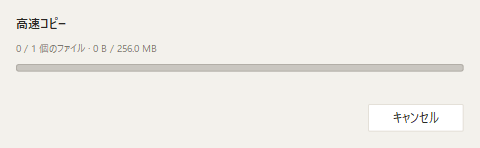
一括リネーム
Ctrl+Shift+R を押すか、右クリックメニューで 一括リネーム を選ぶと、選択した項目の名前をまとめて変更するウィンドウが開きます。最近使ったファイルのペインでは開きません。ウィンドウは設定画面と同じデザインで、フラットなタイトル バー、カード、同じチェックボックスを使っています。左側にルール、右側にライブ プレビューがあります。「ルールを追加」は右上、「元に戻す」は左下、「閉じる」と「名前の変更」は右下にあります。
ツールバーでは、対象をファイル、フォルダー、または両方に絞り込めます。拡張子の一覧でも絞り込めますが、フォルダーには適用されません。プリセットは設定ファイルの隣の rename-presets から読み込み、同じ場所に保存します（%APPDATA%\Maguro\rename-presets。portable.txt があるときは exe の隣）。maguro.json には保存されません。
ルールは上から順に適用されます。ルールごとにチェックボックスでオン・オフを切り替えられ、上下に並べ替えることもできます。ルールの種類は次のとおりです。
置換: 検索と置換を行います。大文字と小文字を区別するか、拡張子を含めるかを選べます。接頭辞と接尾辞: 拡張子ではなく、拡張子を除いた名前に付けます。大文字小文字: 小文字、大文字、単語の先頭、文頭のみから選びます。拡張子も対象にできます。拡張子: 新しい拡張子に変えます。フォルダーには適用されません。連番: 開始値、増分、ゼロ埋め、位置（名前の前、名前の後、指定した文字位置）を指定します。番号は一括処理内での項目の順番に従って振られ、除外された行は数えません。日付: 更新日時、作成日時、アクセス日時のいずれかを、年・月・日・時・分・秒のパターンで挿入します。接頭辞、接尾辞として付けるか、拡張子を除いた名前と置き換えます。EXIF は読み取りません。挿入、削除、トリム: 文字を追加・削除します。トリムで削る文字を空にすると、空白を取り除きます。正規表現: Rust の正規表現を使います。$1 は 1 番目のキャプチャ グループです。パターンが空の場合は何も変更せず、不正なパターンはその行にエラーとして表示されます。
プレビューには、現在の名前、新しい名前、変更される部分が表示されます。絞り込みで外れた項目も一覧に残り、「対象外」と表示されます。適用できない行には、最初に見つかった問題が 1 つ表示されます。確認する順番は、空の名前、使えない文字、予約された名前、末尾の空白やドット、長すぎる名前、一括処理内での名前の重複、既存の名前、不正なパターンです。
「名前の変更」を押すと、名前が変わり、かつ問題のない行だけが適用されます。名前の変更自体は、元に戻せる IFileOperation で行います。途中の手順が失敗した場合は、同じ一括処理で先に完了した手順が元に戻されます。これとは別に、Maguro は直近 20 回分の一括処理の履歴を rename-undo.json に残します。「元に戻す」ボタンか Ctrl+Z で直前の一括処理を元に戻せます。その間に削除されたファイルは飛ばされます。名前の変更に成功すると、ルール一覧が空の置換ルール 1 つにリセットされることがあります。
このウィンドウと設定画面のドロップダウンは、スタイルを適用したコンボ ボックスです。詳しくはテーマとスタイル付きコントロールを参照してください。
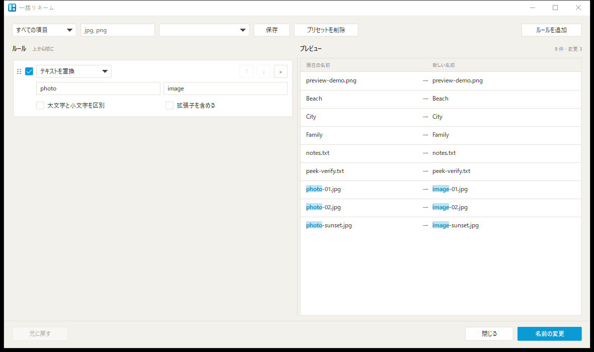
ファイルバスケット
Ctrl+Shift+B でファイルバスケットの表示を切り替えます。ファイルバスケットは、常に手前に表示される小さなウィンドウです。ファイルやフォルダーをドロップするか、Ctrl+Alt+B でアクティブなペインの選択項目を追加します。一覧に保存されるのはファイルのコピーではなくパスで、パスは .maguro セッションではなく maguro.json に保存されます。一覧から外しても、元のファイルはそのまま残ります。
アクティブペインにコピーとアクティブペインへ移動は、ペインでの貼り付けと同じ IFileOperation を使います。すべて選択ですべての行を選択します。クリックで 1 行を選択、Ctrl+クリックでその行の選択を切り替え、Shift+クリックで基準の行からの範囲を選択します。選択した項目をペインやエクスプローラーへドラッグすると、コピーになります。Ctrl を押すとコピー、Shift を押すと移動です。Alt や Ctrl+Shift を押してもショートカットは作成されません。ペインにドロップすると、別スレッドで Windows の進行状況ウィンドウが表示されます。エクスプローラーへも同じようにドラッグできます。「取り除く」と「クリア」は、一覧の内容だけを変更します。
元のファイルが見つからない項目は、取り除くまで「見つかりません」と表示されたまま一覧に残ります。コピーと移動では、こうした項目は飛ばされます。
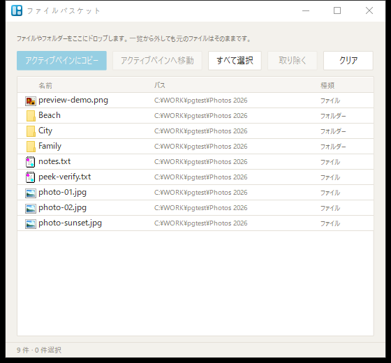
フォルダー監視
Ctrl+Shift+W でフォルダー監視を開きます。フォルダーの追加、ファイルの追加、アクティブなペインの追加で、監視する対象を登録します。フォルダーの行はサブフォルダーまで対象にできます。各行には、設定画面と同じチェックボックスがあります。
変更があると Maguro が通知します。ただし、通知されるのは Maguro の実行中だけです。トレイ アイコンやバックグラウンド サービスはありません。一覧は maguro.json に保存され、フォルダーとファイルを合わせて最大 32 個まで監視できます。監視中のファイルが消えた場合、その行を削除するまで「見つかりません」として一覧に残ります。すでに監視しているフォルダーやファイルを重ねて追加することはできません。
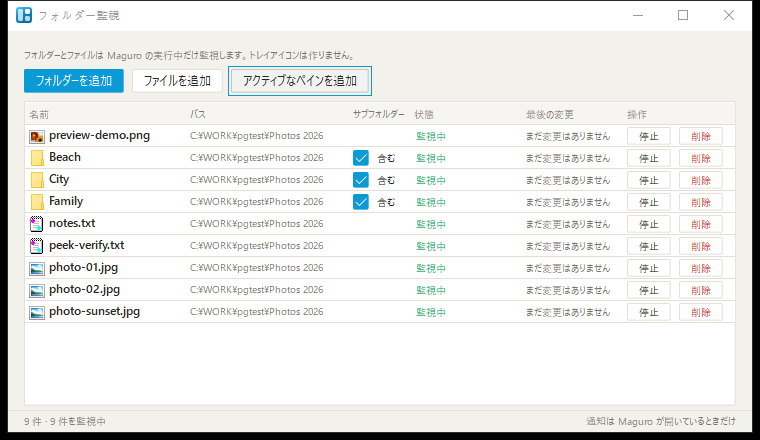
クリップボードのパス
Maguro の実行中は、別のウィンドウが前面にあっても、Win+Alt+V でクリップボードのパスを開けます。フォルダーは新しいタブで開き、ファイルは既定のアプリで開きます。
コピーしたファイル（CF_HDROP）がある場合は、プレーン テキストより優先されます。テキストの場合は、前後の空白と引用符を取り除き、file: URL も受け付け、環境変数を展開したうえで、最初の行だけを使います。クリップボードにフォルダーやファイルがない場合や、パスが存在しない場合は、そのことを知らせるメッセージが表示されます。
このホットキーは既定でオンです。設定 → 一般でオフにすると、ホットキーの登録も解除されます。キーの組み合わせは、設定 → ショートカットで変更できます。別のアプリのファイル ダイアログが前面にあるときは、タブを開かずに、そのダイアログへキー入力を渡します。
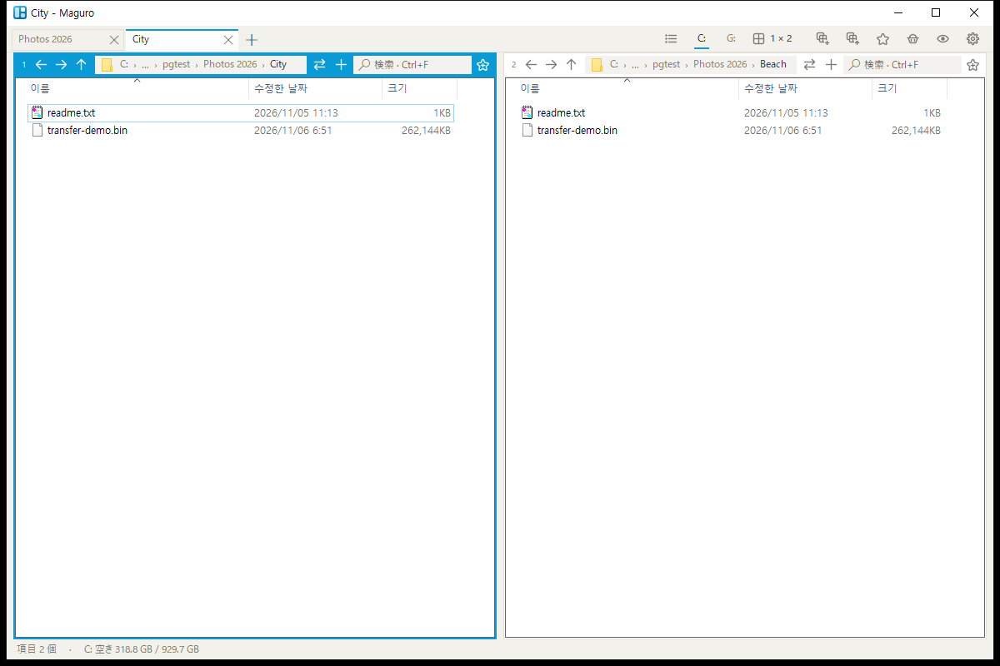
ワークスペース
ワークスペースには、名前を付けたレイアウトを最大 9 つまで保存できます。各スロットには、名前と .maguro のスナップショット（タブ、ペイン、フォルダー）が保存されます。スロットは別のファイルではなく、maguro.json に保存されます。ワークスペースのキーはグローバル ホットキーではありません。
Ctrl+Alt+1～9 でスロットを開き、Ctrl+Alt+Shift+1～9 で現在のレイアウトをそのスロットに保存します。歯車メニュー → ワークスペースでは、スロットの保存、読み込み、名前の変更、消去ができます。空のスロットを開くと、短いメッセージが表示されます。読み込むと現在のタブがワークスペースの内容に置き換わります。事前に確認が表示されるのは、「開く前に確認」がオンのときだけです。
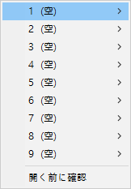
サーバー接続
お気に入りパネルかグループを右クリックし、サーバー接続を追加… を選びます。追加した SMB、WebDAV、SFTP、FTP のサーバーはフォルダーとして表示され、開く、コピーする、プレビューする、といった操作ができます。
サーバーの種類を選び、表示名、アドレス、ポート、リモート パス、ユーザー名、パスワードを入力します。パスワードは Windows 資格情報マネージャーに保存され、maguro.json に書き込まれることはありません。
SMB は Windows の共有を使います。WebDAV では HTTPS が必要になる場合があります。FTP は、入力したホストとポートに接続します。SFTP と FTP は rclone と WinFsp でマウントされ、その後はプレビュー、右クリックメニュー、高速コピーも含めて通常のフォルダーと同じように使えます。こうした接続を追加するときに、rclone と WinFsp をインストールするかどうかを確認することがあります。
使い終わったら切断してください。切断された共有では、「ネットワーク フォルダーのサイズ」がオンでない限り、フォルダー サイズの計算を行いません。ネットワーク フォルダーが開けないときは、F5 を押してください。
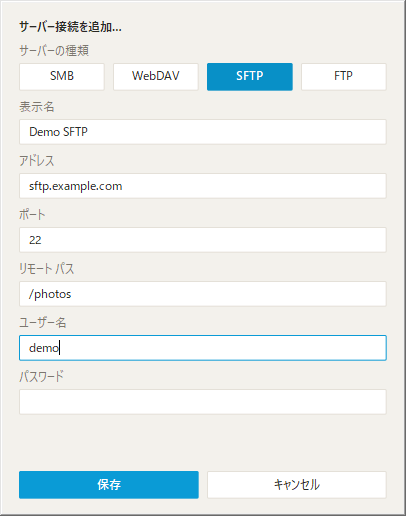
Office ファイル
読み取り専用で開くは、選択した項目がすべて .xls、.xlsx、.xlsm、.csv のいずれかのときに表示されます。.xlsb やフォルダーを含む場合、ほかの形式が混ざっている場合は表示されません。このコマンドは、対象のパスを指定して excel.exe /r を実行します。そのため Excel はブックを読み取り専用で開き、ほかのユーザーは引き続き保存できます。
A1・100%に整えるは、選択した項目がすべて .xlsx または .xlsm のときに表示されます。ダイアログには、選択を A1 に移す、ズームを 100% にする、最初のシートを選ぶ、バックアップを作る（.bak.xlsx）の 4 つのオプションがあり、選んだ内容はセッション中は記憶されます。ほかのプログラムが開いているファイルは飛ばされ、ロックされたファイルをコピーするときと同じように通知されます。最後に、完了した数と飛ばした数が表示されます。
Office ファイルのプレビューは、これとは別の機能です。プレビューとクイックルックを参照してください。
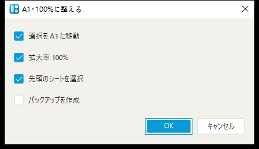
テーマとスタイル付きコントロール
設定 → 外観では、テーマ、アクセント カラー、ツールバー、ドライブ ボタン、ステータス バーを設定します。テーマは「Windows の設定に従う」「ライト」「ダーク」から選びます。アクセント カラーはライトとダークで別々に保存され、どちらも既定はセルリアン #0A9BD6 です。6 つの色見本と「直接指定…」から選べます。廃止されたミントのアクセント カラー #2EC4A6 が残っている古い設定ファイルは、次に読み込んだときにセルリアンに切り替わります。ミントは選択できなくなりました。
テーマを変更すると、ウィンドウのほかの部分はすぐに切り替わります。開いているペインのフォルダー一覧が DirectUI ビュー（通常のエクスプローラーの一覧）なら、Maguro が自ら再起動して、その一覧を新しいテーマで作ります。パス、フィルター、レイアウトはセッションから戻り、その一覧の戻る／進む履歴は最初からになります。クラシックな一覧ビューは、その場で色だけが変わり、パス、選択、スクロール位置は残ります。
設定画面と一括リネームのドロップダウンは、すべてスタイルを適用したコンボ ボックスです。中身は標準のコンボ ボックスなので、F4、Alt+Down、文字入力による選択、マウス ホイールはこれまでどおり使えます。閉じた状態の見た目は隣のテキスト欄に合わせてあり、カードの背景、細い枠線、わずかに丸めた角、塗りつぶした三角形で描かれます。ライト テーマで有効な矢印は #444444 なので、白い背景でもはっきり見えます。ダーク テーマの矢印には、テーマの文字色を使います。フォーカスがあるとき、マウス ポインターを合わせたとき、一覧を開いたときは、枠線がセルリアンになります。一覧で選択中の行は、セルリアンの背景に白い文字で表示されます。無効なコンボ ボックスと、オフにしたリネームのルールは、淡い文字色で表示されます。
このヘルプ サイトは、アプリのテーマに関係なくライト テーマで表示されます。
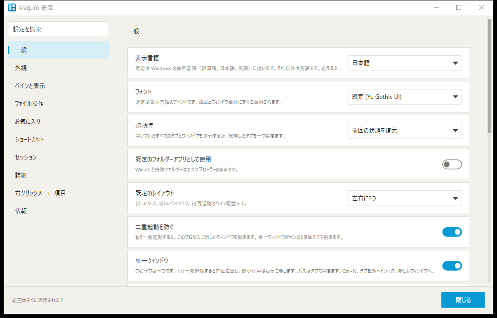
設定
Ctrl+, で設定を開きます。検索ボックスに入力すると、タイトルや説明が一致するページ、カード、ショートカットへ移動します。変更はすぐに反映されます。設定ファイルは %APPDATA%\Maguro\maguro.json です。exe と同じ場所に portable.txt がある場合は、exe と同じ場所の maguro.json を使います。ファイルがない場合は既定値で起動します。書き込みに失敗した場合は、5 秒後に再試行します。読み込めないファイルには手を加えず、未知のキーもそのまま残します。各キーの説明は docs/settings.md にあります。
一般。 表示言語（「自動」の場合、対応する言語ファイルがあれば Windows に合わせ、なければ英語）。フォントはウィンドウ全体に適用されます。フォント サイズの設定はありません。起動時の動作は、前回の状態を復元、保存したセッションを 1 つ開く、既定のレイアウトから選びます。「既定のフォルダーアプリとして使用」は、ファイル システム上のフォルダーとドライブにだけ Maguro を登録します。Win+E、タスク バー、shell: などの仮想フォルダーは引き続きエクスプローラーで開きます。このほか、既定のレイアウト、二重起動を防ぐ、単一ウィンドウ、開く/保存ダイアログのフォルダー、クリップボードのパスのホットキー、空白のダブルクリックで上のフォルダー、Everything、WinMerge のパスがあります。
外観。 テーマ、アクセント カラー、ツールバー、ドライブ ボタン、ステータス バー。
ペインと表示。 新しいペインの既定の表示。フォルダーごとの表示の記憶をオンにすると、並べ替え、列、表示モード、アイコン サイズ、グループ化が、設定ファイルと同じ場所の folder-views.json に保存されます。すべてのフォルダーの既定の表示はアクティブなペインから取り込みます。「このフォルダーの表示を消す」と「すべて消す」もあります。新しいペインの開始フォルダーは、PC、デスクトップ、指定したフォルダーから選びます。隠しファイル。ファイルの拡張子（Windows 自体の設定なので、エクスプローラーにも同じように反映されます）。フォルダー サイズと、既定でオフのネットワーク フォルダー向けオプション。左のパネル、お気に入りとツリーのどちらを上にするか、お気に入りパネルを表示とツリービューパネルを表示。アクティブなペインの枠を強調。プレビュー ウィンドウ。スペースでプレビュー。ホイールで次/前のファイルへ。
ファイル操作。 通常の貼り付けには、常に Windows のコピー ウィンドウを使います。ネットワーク フォルダーの高速コピー。削除の確認。既定の削除方法。新しいファイル名。ドラッグ アンド ドロップの既定の動作は、Windows の規則、常にコピー、常に確認から選びます。
お気に入り。 グループ、フォルダー、ファイルをツリーで管理します。
ショートカット。 行をダブルクリックするか「変更」を押してから、新しいキーを押します。Esc で取り消します。ほかの操作と重なる場合は、割り当てを入れ替えられます。「戻す」を押すと、その行が既定に戻ります。変更したキーは再起動しなくても次の入力から有効になります。保存されるのは、既定と異なるキーだけです。
セッション。 セッション フォルダー、終了時に自動保存（既定はオフ）、未保存を示す緑の点（既定はオン）。
詳細。 起動時に GitHub で新しいリリースを確認します。更新時にダウンロードするのは maguro.exe と maguro.exe.sha256 だけで、zip だけのリリースは展開しません。設定ファイルの場所、Maguro の JSON 形式と ini 形式でのエクスポートとインポートもここにあります。「すべての設定を初期化」は環境設定だけを既定に戻し、レイアウト、フォルダー、お気に入りは残します。ブロックするシェル拡張 DLL の名前もここで指定します。
右クリックメニュー項目。 他社製のハンドラー、メニューの形式、パッケージ コマンド、WinMerge。詳しくは右クリックメニューを参照してください。
情報。 バージョンとクレジットを表示します。Maguro は、efww 氏による efww/grids のフォークです。
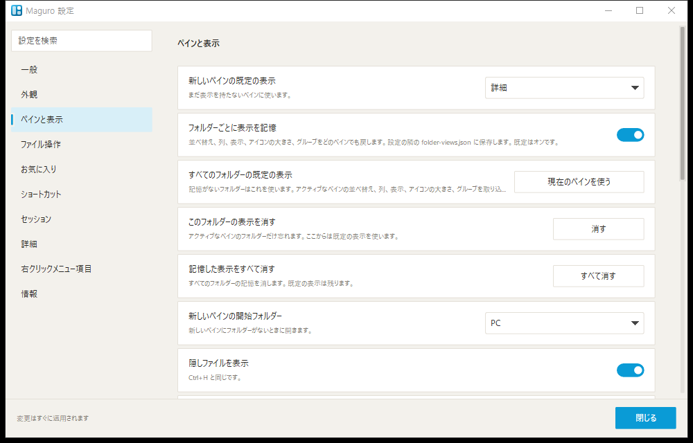
Win+Shift+E とその他の操作
キー操作は ショートカット にまとめています。
Win+Shift+E は、ホットキーの設定がオン（既定）であれば、Maguro の実行中はどこからでも使えます。Maguro を前面に出し、ファイル一覧にフォーカスを移します。Maguro のダイアログが開いていて親ウィンドウが無効になっている場合は、代わりにそのダイアログを前面に出します。Maguro がすでに前面にあるときにもう一度押すと、「単一ウィンドウ」がオンなら新しいタブを開き、オフなら Maguro を最小化します。このホットキーは「既定のフォルダーアプリとして使用」とは無関係で、Ctrl+Shift+E とも別のものです。Ctrl+Shift+E は、Maguro にフォーカスがあるときに左のパネルの表示と非表示を切り替えるだけです。Win+E は引き続きエクスプローラーを開きます。
Ctrl+Alt+G は、別のアプリの「開く」や「保存」ダイアログを、Maguro で開いているフォルダーへ移動させます。このキーは、そうしたダイアログ（#32770）が前面にあり、設定がオンのときだけ登録されます。押すと Maguro で開いているフォルダーの一覧が表示され、選んだフォルダーへダイアログが移動します。仮想フォルダーは一覧に含まれません。Win+Shift+E の動作は変わりません。
F6 と Shift+F6 でフォーカスを移動します。Ctrl+H で隠しファイルの表示を切り替えます。Num+ か Ctrl+Shift+A でパターンを指定して選択、Num− でパターンを指定して選択解除、Num* で選択を反転します。Backspace または Alt+Left は戻る、Alt+Right は進む、Alt+Up は上のフォルダーへ移動です。Alt+Down で最近のフォルダーを開きます。Ctrl+Alt+R で最近使ったファイルを新しい順に開きます。Ctrl+Enter は、選択した最近使ったファイルをそのフォルダーで表示します。この操作は最近使ったファイルのペインでだけ有効で、ほかの場所ではキー入力をそのまま渡します。
ショートカット
以下は既定のショートカットで、すべて設定 → ショートカットで変更できます。アプリ内のショートカット一覧（Ctrl+/）には、変更が再起動なしですぐに反映されます。このページには、0.2.6 に含まれる既定値を載せています。
Win+Shift+E と Win+Alt+V は、Maguro の実行中は常に登録されています。Ctrl+Alt+G は、別のアプリの「開く」や「保存」ダイアログが前面にあるときだけ登録されます。ワークスペースのキーはグローバル ホットキーではありません。ペイン タブのキーは、フォーカスがペインにあるときだけ動作します。
| キー | 操作 |
|---|---|
| タブ | |
| Ctrl+T | 新しいタブ |
| Ctrl+W | タブを閉じる |
| Ctrl+Tab | 次のタブ |
| Ctrl+Shift+Tab | 前のタブ |
| Ctrl+Shift+T | 閉じたタブを開き直す |
| Ctrl+Alt+K | タブを複製 |
| Ctrl+Shift+L | タブ一覧 |
| ペイン | |
| Ctrl+Page Down | 次のペイン |
| Ctrl+Page Up | 前のペイン |
| Ctrl+1…9 | ペイン 1–9 へ移動 |
| ペイン タブ | |
| Ctrl+Alt+T | 新しいペイン タブ |
| Ctrl+Alt+W | ペイン タブを閉じる |
| Ctrl+Alt+Page Down | 次のペイン タブ |
| Ctrl+Alt+Page Up | 前のペイン タブ |
| 移動 | |
| Alt+Shift+← | 左のペイン |
| Alt+Shift+→ | 右のペイン |
| Alt+Shift+↑ | 上のペイン |
| Alt+Shift+↓ | 下のペイン |
| Ctrl+Alt+Shift+← | 左のペインと入れ替え |
| Ctrl+Alt+Shift+→ | 右のペインと入れ替え |
| Ctrl+Alt+Shift+↑ | 上のペインと入れ替え |
| Ctrl+Alt+Shift+↓ | 下のペインと入れ替え |
| Alt+← / Backspace | 戻る |
| Alt+→ | 進む |
| Alt+↑ | 上のフォルダー |
| Alt+↓ | 最近のフォルダー |
| Ctrl+L / Alt+D / F4 | アドレス バー |
| 表示 | |
| Ctrl+F | このフォルダーを検索 |
| F3 | クイックルック |
| Alt+P | プレビュー ウィンドウ |
| F6 | 次のフォーカス |
| Shift+F6 | 前のフォーカス |
| Ctrl+H | 隠しファイルを表示 |
| Ctrl+Shift+E | 左のパネルを表示 |
| Ctrl+Shift+O | エクスプローラーのフォルダーを開く |
| Ctrl+Alt+R | 最近使ったファイル |
| Ctrl+Shift+M | ペインを最大化 / 元に戻す |
| ファイル | |
| Ctrl+Shift+C | フルパスをコピー |
| Ctrl+Shift+R | 一括リネーム |
| Num+ / Ctrl+Shift+A | パターンで選択 |
| Num− | パターンで選択解除 |
| Num* | 選択を反転 |
| Ctrl+Alt+N | 新しいテキスト ファイル |
| Ctrl+Shift+N | 新しいフォルダー |
| F7 | このペインに新しいフォルダー |
| Ctrl+Alt+C | WinMerge でフォルダーを比較 |
| Ctrl+Shift+B | ファイルバスケット |
| Ctrl+Alt+B | 選択をバスケットに追加 |
| Ctrl+Enter | フォルダーに表示（最近使ったファイルのみ） |
| セッション | |
| Ctrl+S | このタブを保存 |
| ワークスペース | |
| Ctrl+Alt+1…9 | ワークスペースを開く |
| Ctrl+Alt+Shift+1…9 | ワークスペースを保存 |
| お気に入り | |
| Ctrl+B | お気に入り |
| ヘルプ | |
| Ctrl+, | 設定 |
| F1 | ブラウザーでこのヘルプを開く |
| Ctrl+/ | ショートカット一覧 |
| ウィンドウ | |
| Win+Shift+E | Maguro を前面に |
| Ctrl+Alt+G | ファイル ダイアログのフォルダーへ移動 |
| Win+Alt+V | クリップボードのパスを開く |
| Ctrl+N | 新しいウィンドウ |
| Ctrl+Shift+W | フォルダー監視 |
Maguro が割り当てを変えず、エクスプローラーと同じように使えるキーは、F2（名前の変更）、Del と Shift+Del、Ctrl+C、Ctrl+X、Ctrl+V、F5（更新）です。
マウス操作には、レイアウト ボタン、アドレス バーの「›」、区切り線のダブルクリック、ペインヘッダーの右クリック（色の設定）、ペイン タブの中クリック（閉じる）、ペイン番号のドラッグ（入れ替え、Ctrl を押しながらで複製）があります。
言語
英語はプログラムに組み込まれていて、ほかの翻訳がない場合に使われます。韓国語、日本語、フランス語、ドイツ語は、lang/lang.ko.ini、lang/lang.ja.ini、lang/lang.fr.ini、lang/lang.de.ini として同梱されています。Maguro は初回起動時とバージョンが変わるたびに、この 4 つのファイルを設定ファイルと同じ場所の lang フォルダーに書き込み、常に上書きします。lang.xx.user.ini や、自分で追加したほかの lang.xx.ini を書き込んだり、上書きしたり、削除したりすることはありません。
言語ファイルの文字コードは UTF-8 で、先頭の BOM は無視されます。各行は key = text の形式です。[meta] の name は言語一覧に表示される名前、[meta] の font は UI フォントで、省略できます。ファイルにないキーには、英語のテキストが使われます。lang.xx.user.ini はその上に重ねて読み込まれ、こちらが優先されます。
「自動」の場合、対応する言語ファイルがあれば Windows の表示言語に合わせ、なければ英語を使います。各ペインの中のエクスプローラー部分（列名や、シェル自体の右クリック項目など）は、Windows の表示言語に従います。フォントは既定で言語に合った書体を使います。韓国語は Malgun Gothic、日本語は Yu Gothic UI、それ以外は Segoe UI です。言語ファイルで書体が指定されていれば、その書体を使います。選んだ書体は、ウィンドウ全体にまとめて適用されます。
トラブルシューティング
フォルダーが開かない場合は、そのペインをクリックしてから F5 を押してください。F5 はアクティブなペインを再読み込みし、開けなかったネットワーク フォルダーをもう一度試します。
サブフォルダー検索で何も見つからない場合は、Everything をインストールして起動し、設定 → 一般を確認してください。Everything がない場合、Maguro はディスクを直接たどりますが、それも「サブフォルダー」にチェックを入れたときだけです。
ネットワーク コピーが遅い場合や、Maguro の進行状況ウィンドウが表示されない場合は、ネットワーク フォルダーの高速コピーをオンにするか、高速貼り付けを使ってください。この設定がオフのときは、Windows のコピー ウィンドウが使われます。完全にローカルなコピーでは、高速貼り付けを選ばない限り高速コピーは動作しません。
WinMerge が起動しない場合は、設定 → 一般でパスを指定してください。フォルダーを比較するには、実際のフォルダーを開いている必要があります。右クリックメニューの WinMerge コマンドは、有効にするまで表示されません。
SFTP に接続できない場合は、確認が表示されたときに rclone と WinFsp をインストールし、ホスト、ポート、ユーザー名、パスワードを確認してください。WebDAV では HTTPS が必要になる場合があります。SMB は Windows の共有を使い、FTP は接続に設定したホストとポートを使います。
テーマを変えたあともフォルダー一覧が以前の色のままなら、Maguro を再起動してください。DirectUI の一覧はその再起動で作り直されます。クラシックな一覧は再起動なしで色が変わります。
前回 Maguro が予期せず終了した場合は、次回の起動時に、レポートの保存場所（設定ファイルと同じ場所の crashes フォルダー）が表示され、そのフォルダーを開くかどうか確認されます。レポートには、バージョン、スレッド、例外、エラーが発生したモジュール、最後に開いていたフォルダー、読み込まれていたシェル拡張 DLL が記録されます。
もう一度起動しても何も起きないように見える場合は、「二重起動を防ぐ」か「単一ウィンドウ」がオンになっています。最初のウィンドウがそのまま残り、パスはタブとして開いています。インストールできる更新は、maguro.exe を置き換えてから再起動します。zip だけのリリースは展開しないため、更新ウィンドウで案内されたときは、exe を手動で置き換えてください。
Maguro を管理者として実行しないでください。PowerToys のマウス十字線のようなツールは、昇格したウィンドウの上ではカーソルを追跡できません（UIPI）。Maguro を通常の権限で実行するか、両方を管理者として実行してください。
exe にコード署名がないため、初回起動時に SmartScreen の警告が表示されます。「詳細情報」→「実行」を選んでください。
古い .grids、.qdr、grids.ini は開けません。現在のウィンドウから新しい .maguro セッションを保存してください。